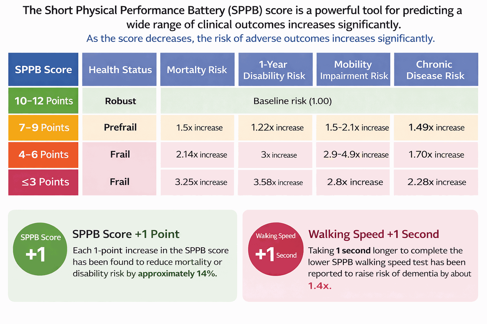

SPPBは高齢者の下肢機能を評価するための標準化・検証済みツールです。 静的バランス検査、歩行速度検査、椅子立ち上がり検査の3つのサブテストで構成され、 フレイル・サルコペニア研究、臨床評価、地域社会における統合ケアなど幅広い分野で活用されています。
各サブテストは下肢機能の異なる側面を評価し、それぞれ0〜4点で採点されます（合計最高12点）。
3つのサブテストのスコア（各0〜4点）を合計し、0〜12点の総スコアを算出します。
| 総スコア | 機能レベル | 臨床的意義 |
|---|---|---|
| 0 – 6 | 重度の機能低下 | 死亡・転倒・入院・移動能力障害のリスクが高い。優先的な介入対象。 |
| 7 – 9 | 中等度の機能低下 | 中間リスク群。運動・リハビリ介入の効果が最も大きく現れる範囲。 |
| 10 – 12 | 正常〜良好 | リスクが低い群。縦断的モニタリングの基準値として有用。 |
総スコアだけでなく、どのサブテストで機能低下が見られるかを合わせて把握することで、個別化された介入方針の立案に役立ちます。
SPPBは単なる下肢機能のスコア化を超え、地域在住高齢者の死亡率、転倒リスク、移動能力障害を独立して予測します。
SPPBはバランス・歩行・下肢筋力の3領域における加齢関連機能低下の累積負担を反映し、包括的なフレイルバイオマーカーとして機能します。スコアが低い（≤6点）ほど、5年死亡率・入院リスク・転倒発生が著しく高まります。
Pavasiniらの系統的レビューおよびメタアナリシス（2016年；n > 30,000人）では、SPPBスコアが1点上昇するごとに全死亡リスクが統計学的に有意に低下することが確認されました。再入院・施設入所・移動能力障害の発生においても同様の傾向が観察されています。
フレイルの観点からSPPBは、Friedフレイル表現型の身体的側面（遅い歩行速度・下肢筋力低下）を反映するとともに、バランスサブテストが歩行のみでは把握できない姿勢制御能力と転倒リスクに関する追加情報を提供します。

SPPBスコアは5年死亡率、転倒リスク、入院リスクを予測します。スコアが1点高いほど有害転帰リスクが意味のある形で低下します。
SPPBは欧州・北米・アジア・国際機関の主要な臨床分野ガイドラインで推奨されています。
| 臨床分野 | ガイドライン / 機関 | SPPBの役割 |
|---|---|---|
| サルコペニア | EWGSOP2 (欧州, 2018) | 診断のための身体機能評価の主要基準 |
| サルコペニア | FNIH サルコペニアプロジェクト (米国, 2014) | 「弱さ＋遅さ」表現型基準；歩行速度閾値≤0.8 m/s |
| サルコペニア | AWGS 2019 (アジア) | 診断および重症度分類のための身体機能指標 |
| 統合ケア | WHO ICOPE (2019) | 地域在住高齢者の移動能力スクリーニングツール |
| 腫瘍学 | ASCO (2018) | 包括的老年評価（CGA）内の身体機能領域指標 |
| 腫瘍学 | ESMO/SIOG (2021) | 機能評価および化学療法毒性リスク層別化 |
| 心臓リハビリ | JCS/JACR (日本, 2021) | 心臓リハビリにおける下肢機能評価ツール |
| コホート研究 | NHANES (米国) | 人口レベルの機能追跡のための身体機能モジュール |
| コホート研究 | KLHAS (韓国) | 国家老化コホートにおける機能軌跡の追跡 |
| 臨床試験 | SPRINT (米国, 2016) | 身体機能および歩行速度のアウトカム指標 |
SPPBは研究の枠を超え、世界中の保健システムと国家ケアプログラムに統合されています。
🇰🇷 大韓民国 — 国家統合ケアプログラム
国内デルファイ合意研究において、地域在住高齢者を対象とした統合ケアプログラムの標準身体機能評価ツールとしてSPPBが推奨されました。現在、保健センターを通じて運営される地域フレイル予防プログラムに組み込まれ、大規模な標準化機能スクリーニングを可能にしています。
🌍 WHO — ICOPEフレームワーク
WHO高齢者統合ケア（ICOPE）フレームワークは、移動能力領域の評価ツールとしてSPPBを明示的に推奨し、100カ国以上において高齢者の集団レベル機能スクリーニングの国際的参照標準として確立されました。このフレームワークは各国保健システムがSPPBを機能評価プロトコルとして採用するよう導いています。
🇪🇸 スペイン / 欧州 — CIBERFESコンセンサス
スペインのCIBERFESネットワーク（フレイルと健康老化分野の国立生医学研究ネットワーク）および欧州老化コンソーシアムは、老化研究の臨床試験およびコホート研究における合意された測定ツールとしてSPPBを採用し、国際間比較可能性と方法論的堅牢性を確保しています。
AndanteFitはマルチセンサー技術を活用してSPPBの3つのサブテストをすべて自動化します。 手動測定なしに3分以内で検査が完了し、韓国とシンガポールで実施された査読付き研究において 手動SPPBとの高い一致度（ICC 0.94–0.97）が確認されています。